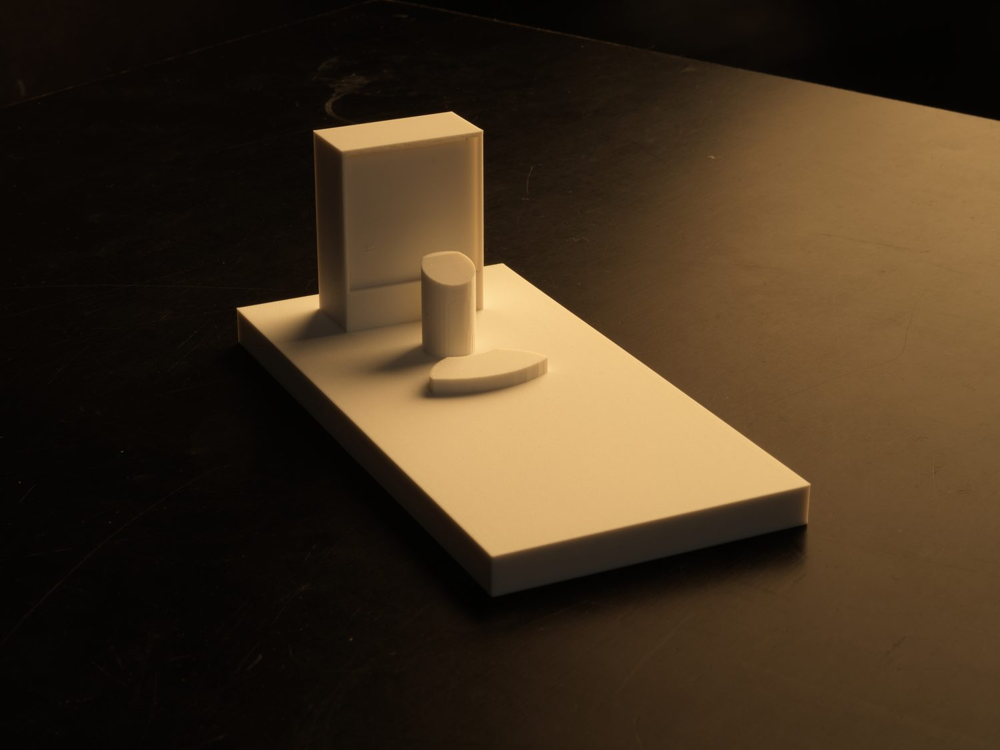
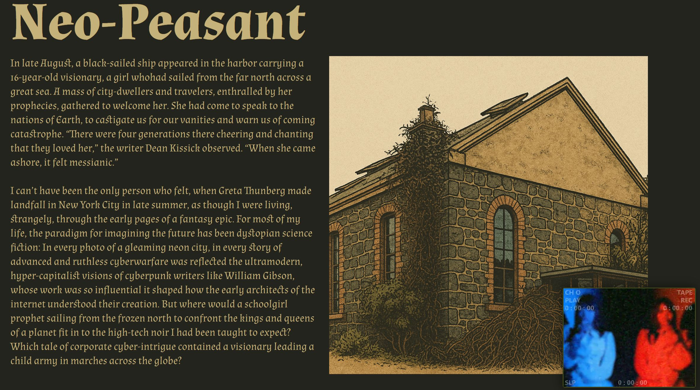
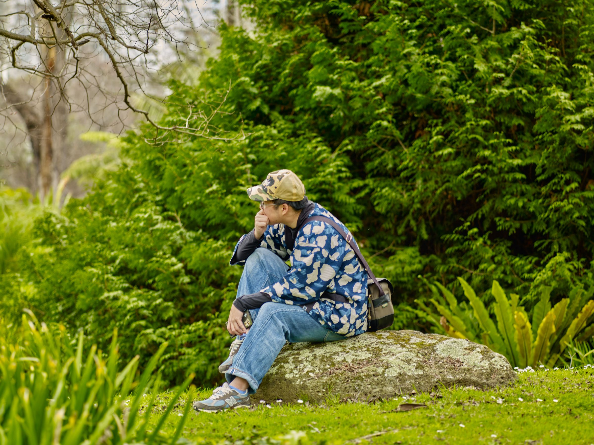
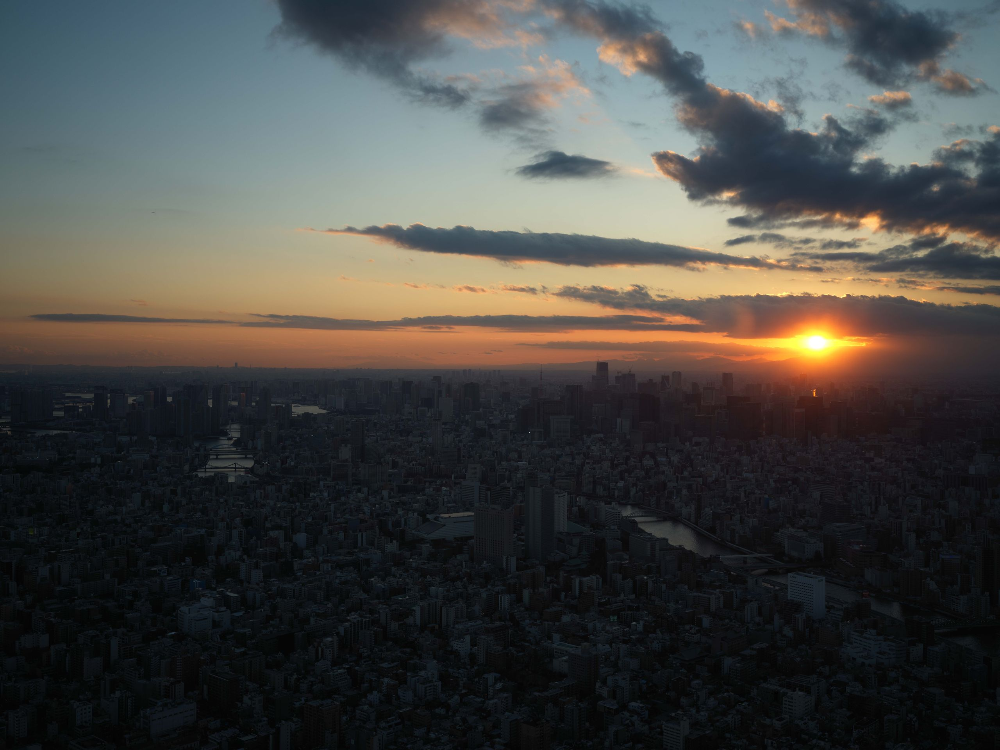

Media
Photography & videography

Fabrication & Digital Works
Prototyping, 3D print & graphics

UI/UX & Web Application
Interfaces & e-commerce

About
Background, timeline & skills

A versatile web and multimedia designer working across digital interfaces, commercial photography and physical prototyping — building functional, high-converting visual assets for digital and physical touchpoints.
From pixel to print to prototype — a thourough understanding top down.



Shooting and building across Southeast Asia, Australia and Japan.
Monash University, Melbourne — digital & interactive media, UX pathways, typography.
Supporting LAPP Asia Pacific's regional e-commerce and digital campaigns.
Private models, commercial events and agency campaigns across three countries.